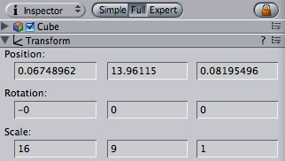

Previous
Previous
Here's how to do a splash screen or any other type of full-screen image in Unity. This HOWTO takes care to work for multiple different resolutions and aspect ratios.
- First you need a big texture. Ideally textures should be power of two in size. You might for example use 1024x512 as this fits most screens.
- Make a box using the "GameObject->Create Other->Cube" menu item.
- Scale it to be in 16:9 format by switching the Inspector to "Full" mode, then entering 16 and 9 as the first two value in the Scale:
- Put the texture on a cube and make a camera to point at it. Place the camera at such a distance so that the cube is still visible on a widescreen.
- Apply the texture to the box by dragging it on.